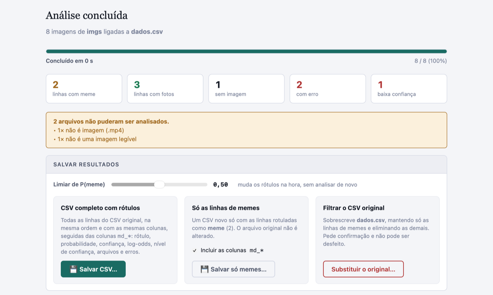
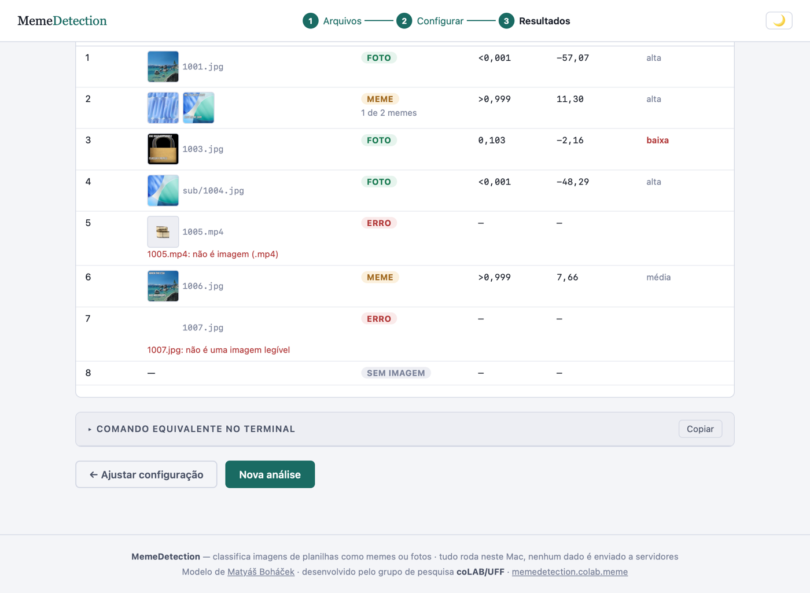

Memes ou fotos?
Classifique as imagens do seu CSV.
Indique uma planilha e a pasta com as imagens das linhas. O MemeDetection analisa cada imagem no seu Mac com o modelo meme-detection, acrescenta ao CSV um rótulo e métricas de confiança e, se você quiser, deixa só as linhas de memes.
macOS 12 ou mais recente · Apple Silicon e Intel · gratuito e de código aberto (GPL-2.0)

Como funciona
1Arquivos
Escolha ou arraste o CSV e a pasta de imagens. Subpastas são incluídas. Bases baixadas com o WgetLAB funcionam direto.
2Configurar
O app descobre qual coluna liga cada linha às imagens, pelo nome do arquivo ou pelo ID (123.jpg, 123_1.jpg…). Opcionalmente, indique uma coluna com rótulos conhecidos para medir a acurácia.
3Resultados
Salve o CSV completo com rótulos, um CSV só com as linhas de memes ou filtre o próprio arquivo original. O limiar pode ser ajustado sem analisar de novo.

Colunas acrescentadas ao CSV
As colunas originais ficam intactas, com a mesma ordem, o mesmo delimitador e a mesma codificação. As novas vêm no fim:
| Coluna | Conteúdo |
|---|---|
md_rotulo | meme, foto, sem_imagem ou erro. Uma linha com várias imagens é meme se pelo menos uma delas for. |
md_prob_meme | Probabilidade de meme (0 a 1) calculada pelo modelo. |
md_confianca | Probabilidade da classe escolhida. |
md_logit | Log-odds de meme: positivo = meme, negativo = foto. Como as probabilidades do modelo saturam, é a medida mais útil para comparar imagens. |
md_nivel_confianca | alta, média ou baixa, conforme a distância até o limiar. Vale revisar à mão as de confiança baixa. |
md_n_imagens, md_n_memes | Quantas imagens estão ligadas à linha e quantas são memes. |
md_arquivos, md_erro | Arquivos analisados e, se houver, o motivo de falha (ex.: não é imagem (.mp4)). |
md_acuracia_validacao_modelo | 0.91, a acurácia de validação declarada pelo autor do modelo, para referência. |
Se você indicar uma coluna com rótulos codificados à mão (meme/foto, 1/0, sim/não…), o app calcula acurácia, precisão, recall e F1, mostra a matriz de confusão e exporta um relatório em CSV.
Instalar e abrir pela primeira vez
- Baixe MemeDetection-macOS.zip, descompacte e arraste o MemeDetection.app para Aplicativos.
- Na primeira vez, clique com o botão direito → Abrir e confirme. O app não é notarizado pela Apple, então o macOS avisa antes de abrir.
- Se o macOS disser que o app "está danificado", rode no Terminal:
Pelo Terminal
O mesmo app funciona na linha de comando, com a mesma lógica e o mesmo CSV de saída. A tela de configuração mostra o comando pronto:
Outras opções: --column, --mode file|id, --threshold, --truth, --no-metrics, --concurrency. Veja --help ou o README.
O modelo
O app usa o meme-detection de Matyáš Boháček (2020), um classificador meme × foto treinado no Create ML com alguns milhares de imagens anotadas, que o autor declara ter 91% de acurácia de validação. É um pipeline com o extrator VisionFeaturePrint_Scene da Apple e uma regressão logística. O arquivo vai incluído no app e no repositório.
Atenção a quem for usar o repositório original: o .mlmodel da versão mais recente é, por engano, um classificador de sentimento de texto. O detector de memes correto está no commit de6affb, e é esse que o MemeDetection usa. Detalhes e verificação.
Para dar mais resolução às métricas, o app lê os pesos da regressão direto do arquivo e calcula o log-odds em precisão dupla. A probabilidade é idêntica à do modelo original. Ele acerta bem os image macros com texto sobreposto, mas pode errar com prints de tela, cartazes, charges ou memes sem texto. Meça o desempenho na sua base com uma amostra codificada à mão. No mesmo Mac, os resultados se repetem. Entre Macs diferentes (Apple Silicon × Intel), podem variar um pouco.
Privacidade
O CSV e as imagens são lidos direto do disco e analisados localmente. O app não faz nenhuma conexão de rede, e esta página não usa cookies nem rastreamento. Os arquivos só são gravados onde você escolher, e o CSV original só é alterado se você pedir e confirmar.